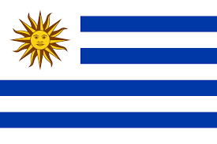

About Me

My name is Samuel Cortez and I live in Uruguay. I love learning web development. I have a wonderful family, I love to travel, and I enjoy learning new technologies.
Mi Ciudad
My city is beautiful and full of culture. Uruguay is a small South American country known for its stability, democracy, and high quality of life. It became independent in 1825. The economy is based mainly on agriculture, with beef, wool, and soybeans as key exports. Uruguay also leads in renewable energy and has a strong education system.